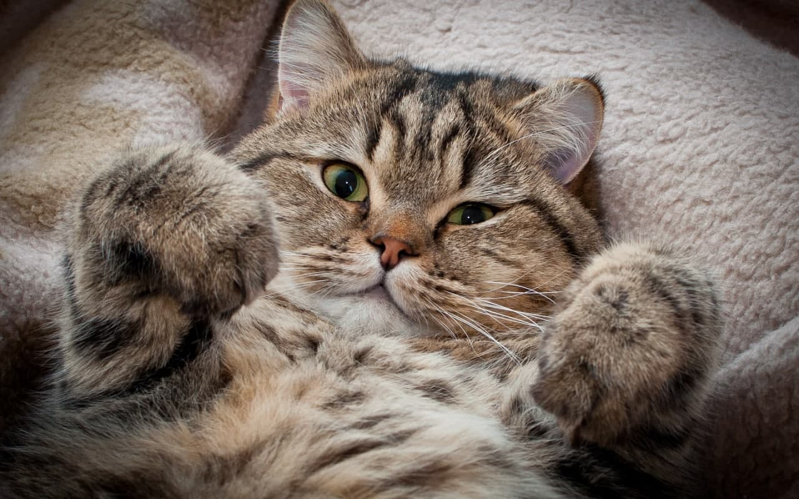
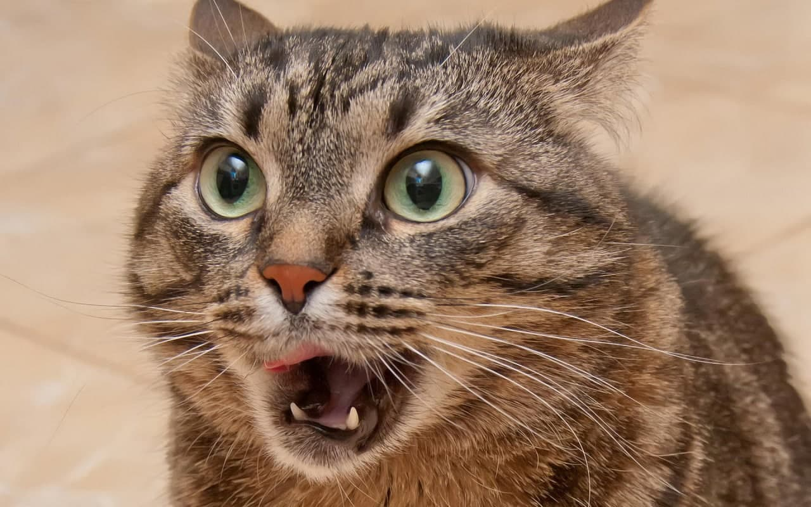
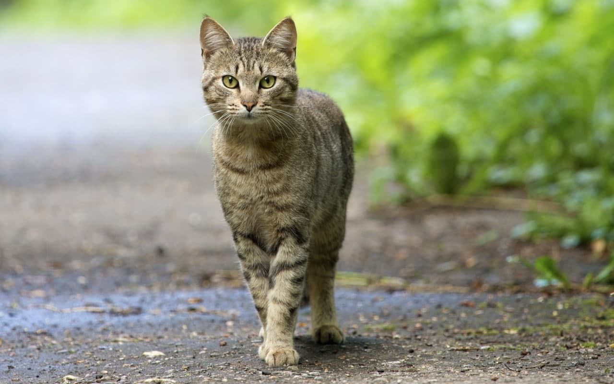
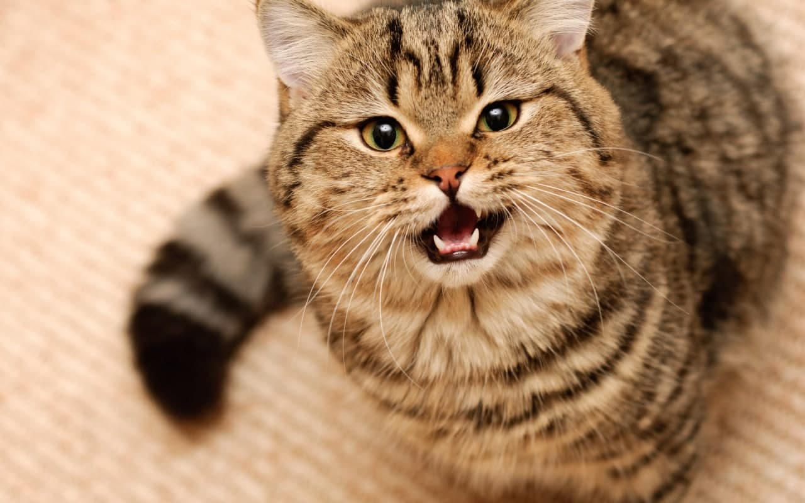
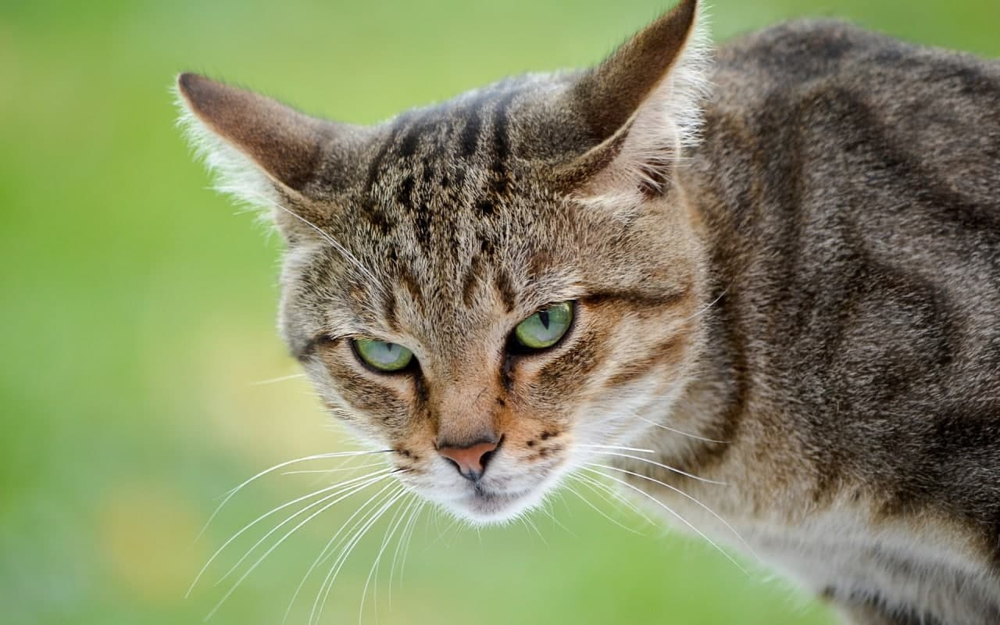
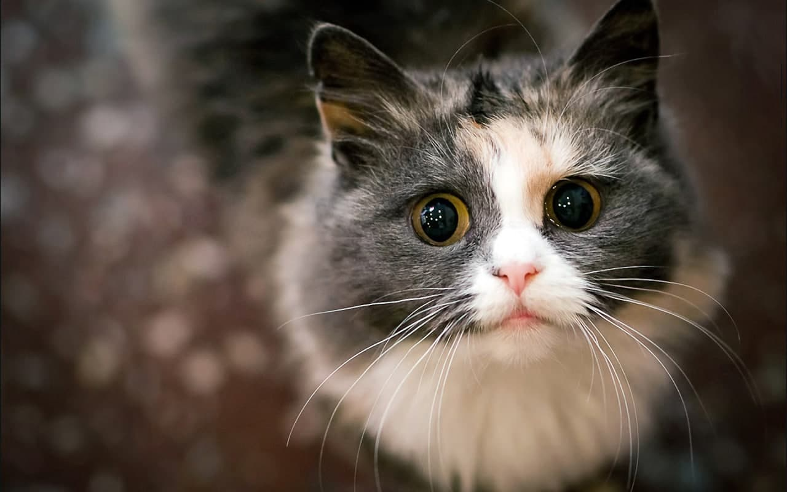
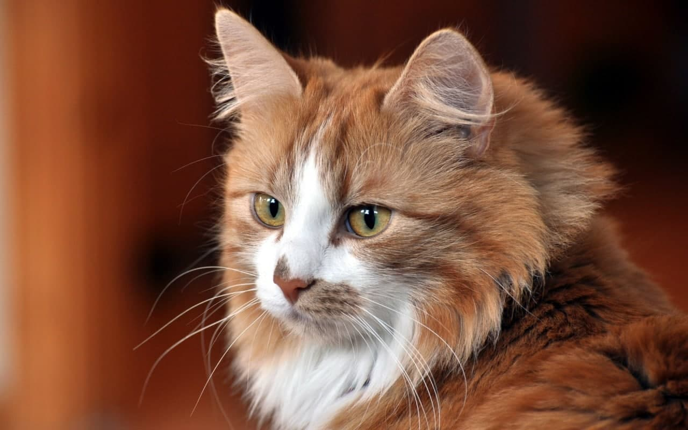
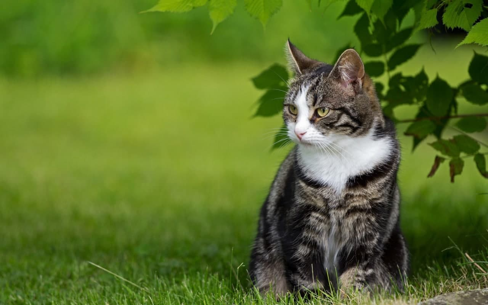

Мурмаркет

Барсик
Возраст: 1 год
Порода: крутая
Болезни: нет
Статус: ищет хозяина
Большой и вкусный
Возраст 1 год
Очень любит играться с клубком и трогать чужие вещи.

Пуховичок
Возраст: 5 месяцев
Порода: неизвестно
Болезни: нет
Статус: ищет хозяина
Маленький и пушистый
Возраст 5 месяцев
Его можно случайно потерять в ваших вещах, поэтому за ним нужен глаз да глаз

Базилио
Возраст: 1 год
Порода: неизвестно
Болезни: нет
Статус: ищет хозяина
Умный и красивый
Возраст 1 год
Играет в шахматы на уровне "легендарный". Обучит вас "десткому мату".

Сережа
Возраст: 1,3 года
Порода: королевская
Болезни: нет
Статус: ищет хозяина
Большой и вкусный
Возраст 1,3 года
Козырный кот, умеет соблазнять обоятельных кошечек, имеет влияние на разных точках Котбурга.

Маша
Возраст: 0,9 года
Порода: неизвестно
Болезни: нет
Статус: ищет хозяина
Очень красивая
Возраст 0,9 года
Любит действовать Сереже на нервы, но за ее красивые глаза Сережа всегда ее прощает

Бархат
Возраст: 1 год
Порода: неизвестно
Болезни: нет
Статус: ищет хозяина
Ровный котяря
Возраст 1 год
Брат Сережи, умеет перебирать сигарету в зубах без лап, может закошмарить любого кота на районе

Вредина
Возраст: 1 год
Порода: неизвестно
Болезни: нет
Статус: ищет хозяина
Все время вредничает
Возраст 1 год
Никто с ним не обащется

Ягами Лайт
Возраст: 2 года
Порода: японец
Болезни: нет
Статус: ищет хозяина
Интеллектуал, стратег
Возраст 2 года
Любит играть в игры со смертью, снимался в мультике death note

Барон
Возраст: 3 года
Порода: голубых кровей
Болезни: нет
Статус: ищет хозяина
Аристократ
Возраст 3 года
Не водится с гопарями вроде Бархата, но понимает, что общение с такими как он взаимовыгодно обоим. Они ему крышу - он им бизнес

Шустрик
Возраст: 1,5 год
Порода: неизвестно
Болезни: нет
Статус: ищет хозяина
Ловец на мышей
Возраст 1 год
Очень сильно любит охотиться на мышей, поэтому если вы решите выпустить его погулять на ночь, что на завтрак будет что кушать
Возраст
Порода